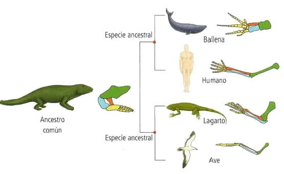
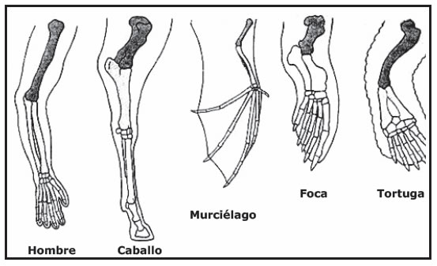
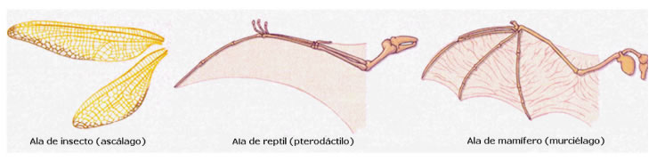
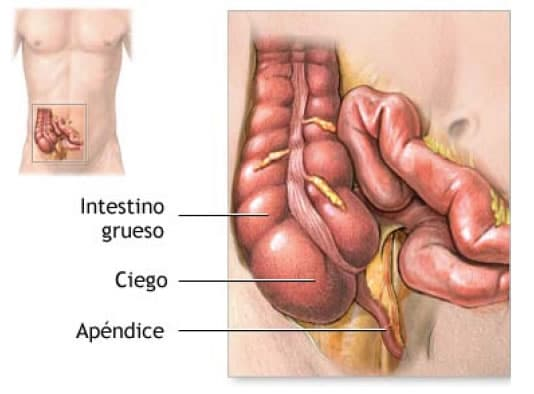

Es un área de la biología que estudia las semejanzas y diferencias de las estructuras morfológicas entre los organismos. Esta disciplina permitió inferir el parentesco entre especies y también la relación entre el ambiente y las adaptaciones de los organismos. Así, especies adaptadas a diferentes ambientes y, en consecuencia, morfológicamente muy diferentes, muestran semejanzas que sugieren un ancestro común.
Por ejemplo, las extremidades superiores de anfibios, reptiles, aves y mamíferos presentan variaciones morfológicas que reflejan sus diferentes modos de vida. Sin embargo, sus estructuras internas revelan grandes semejanzas: los huesos húmero, radio y cúbito están presentes en las extremedidades de dichos organismos y han sido identificados también en fósiles. Esta evidencia sugiere un ancestro común para estos grupos de animales.
La anatomía comparada además ha sido capaz de identificar semejanzas estructurales al comparar especies que habitan lugares muy distantes. pero en ambientes similares, reconociendo la estrecha relación entre el ambiente y las adaptaciones de los organismos.
Especies no relacionadas (o lejanamente emparentadas), pero que habitan ambientes similares, pueden evolucionar de manera convergente alcanzando apariencias físicas similares, como respuesta a los mismos requerimientos o presiones ambientales.
Tales estructuras de apariencia y función similar, aunque de origen diferente, se conocen como órganos análogos o analogías. Dichas estructuras se explican por convergencia evolutiva, es decir, han evolucionado de manera independiente, dado que las especies que las presentan no comparten una especie ancestral común.
Ejemplos clásicos de estructuras análogas son las alas de los insectos y las alas de las aves. También las analogías pueden ser conductuales, fisiológicas, metabólicas y genéticas. Por ejemplo, el vuelo en aves y murciélagos es una analogía conductual, pues evolucionó de manera independiente en dichos grupos taxonómicos.
Se refiere a que especies o grupos diferentes de organismos vivos presentan el mismo plan estructural de un órgano, a causa de un origen embriológico y herencia común, pero pueden emplearse para funciones diferentes. Son órganos homólogos las extremidades anteriores de los vertebrados, es decir, el brazo del hombre, con la pata de un caballo, con el ala de un murciélago, con la aleta de una foca y una ballena y con la pata o aleta de una tortuga. Todas las extremidades anteriores de vertebrados descritas se usan para diferentes funciones, pero tienen la misma secuencia y disposición de los huesos en su plan estructural

Son estructuras funcionalmente similares, pero que difieren en su origen embrionario y en sus características estructurales. Dichos órganos se presentan en seres vivos, los cuales, a pesar de ser morfológicamente muy distintos y haberse desarrollado de grupos ancestrales diferentes, tienen una cierta semejanza con estructuras adaptadas a una misma función (por ejemplo las alas de un insecto y de un ave: en cada uno de ellos, se forma una superficie plana a partir de componentes estructurales completamente diferentes).
Se trata de órganos de tamaño pequeño y por lo general sin función, que se encuentran en muchas plantas y animales, cuyos parientes ancestrales próximos, tienen el mismo órgano completamente desarrollado y funcional, Ej.: el apéndice vermiforme del hombre, en su intestino grueso, que se interpreta como un legado orgánico en degeneración, de antepasados con una dieta alimenticia mucho más vasta, fundamentalmente herbívora.
